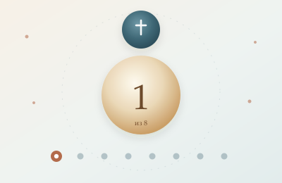
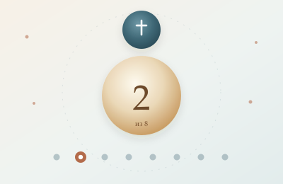
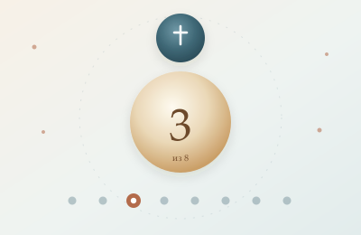
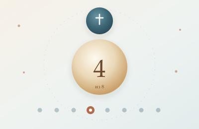
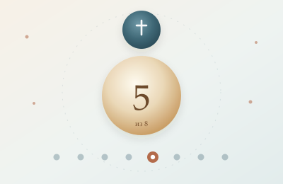
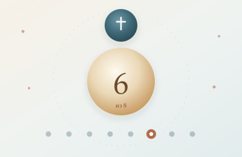
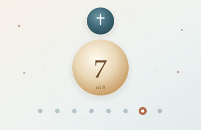
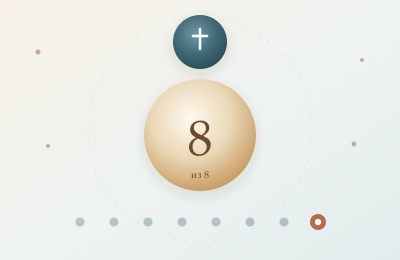

Оглавление серии
Серия самодостаточна: каждую статью можно читать отдельно. Вместе они складываются в единый разбор книги — от главного тезиса до православного ответа.

Главный тезис
Ложная дихотомия, условие и заслуга, свобода и автономия.

Первородный грех
Вина или повреждение? Три модели, отцы и крещение младенцев.

Отцы до Августина
Тертуллиан, Ориген, Киприан, Иларий, Амвросий, Амвросиаст и предопределение до Августина.

Соборы: Карфаген 418 и Ефес 431
Карфаген 418 и Ефес 431: каноны, протокол 411 г. и «два Вселенских Собора».

Оранж 529 и Трулль 692
Оранж 529 и Трулль 692: 25 глав, предваряющая благодать и каноническая рецепция.

Златоуст и Пелагий
Структурное тождество или ложная эквивалентность? Вера как дар Божий.

Августин
Что можно принять, а что нельзя. Гадрумет, Марсель и границы системы.

Предопределение и синергия
Библейские тексты, предопределение и итог книги.
Как читать серию
Бог спасает. Человек свободно отвечает. Благодать предшествует, действует и укрепляет, не уничтожая свободу. Это не компромисс. Это апостольская вера.